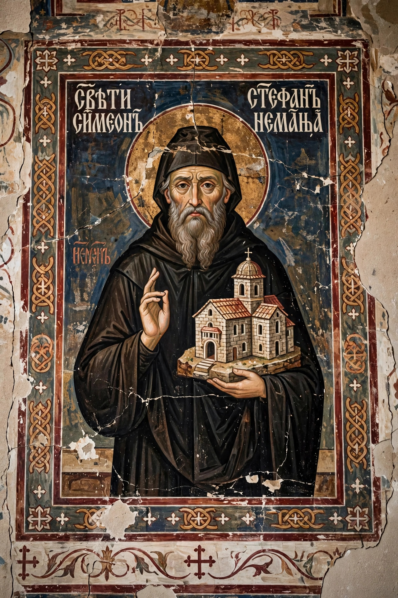

Stefan Nemanja
| Stefan Nemanja | |
|---|---|
| Reign | 1166–1196 (Grand Prince of Raška) |
| Born | c. 1113, Ribnica (Podgorica) |
| Died | 13 February 1199, Hilandar Monastery, Mount Athos |
| Dynasty | Nemanjić (founder) |
| Venerated as | Saint Simeon the Myrrh-streaming |
Stefan Nemanja (Serbian: Стефан Немања; c. 1113–1199) was the Grand Prince (veliki župan) of the Serbian principality of Raška from 1166 to 1196 and the founder of the Nemanjić dynasty, which ruled medieval Serbia for two centuries. Canonised as Saint Simeon, he is one of the most revered figures in Serbian history.

1. Rise to power
2. Unification of Serbia
3. Abdication and monastic life
4. Canonisation
Rise to power
Nemanja, the youngest son of the župan Zavida, overcame his brothers with Byzantine backing, was briefly imprisoned by Emperor Manuel I Komnenos, and emerged by 1166 as grand prince of Raška, initially as a Byzantine vassal.
Unification of Serbia
Exploiting Byzantine weakness after 1180, Nemanja annexed Duklja, the Adriatic coast and parts of Kosovo and Macedonia, creating the first unified Serbian state. He met the Emperor Frederick Barbarossa at Niš in 1189 during the Third Crusade and negotiated (unsuccessfully) for an anti-Byzantine alliance. He also persecuted the Bogomil heresy within his lands.
Abdication and monastic life
In 1196 Nemanja abdicated in favour of his middle son Stefan and became a monk under the name Simeon, founding the great monastery of Studenica in Serbia and then joining his youngest son Saint Sava at Mount Athos, where they refounded the Hilandar Monastery.
Canonisation
Nemanja died at Hilandar in 1199. Miracles were reported at his tomb — his relics were said to stream myrrh — and the Serbian Orthodox Church canonised him as Saint Simeon the Myrrh-streaming. His endowments, Studenica and Hilandar, remain cornerstones of Serbian Orthodoxy.
See also: Saint Sava · Serbia · Mount Athos